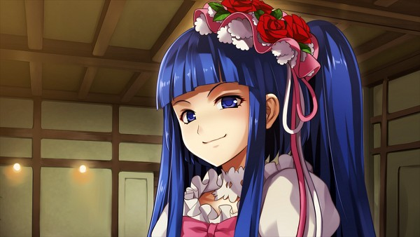

Il y a une phrase dans Umineko no Naku Koro ni qui revient comme une litanie, comme un mantra, comme une condamnation selon l'angle sous lequel on la reçoit :
Cette phrase appartient à Ange Ushiromiya. Elle est la signature de son arc, le programme de sa transformation. Elle arrive en EP4 comme une révélation, et elle résonne ensuite dans tout ce qui suit — dans chaque partie jouée par Beatrice, dans chaque tentative de Battler de comprendre ce qui s'est passé à Rokkenjima, dans l'échec spectaculaire d'Erika Furudo à « résoudre » quoi que ce soit.
Mais ce que cette phrase dit exactement — ce qu'est « l'amour » dont elle parle, ce qu'est le « cela » qui ne peut être vu sans lui — est bien plus complexe qu'il n'y paraît. Ce n'est pas une déclaration romantique. C'est une proposition philosophique sur la nature de la connaissance, sur ce qu'il faut pour comprendre une autre personne, et sur le prix à payer quand on refuse de le payer.
I. La magie n'est pas surnaturelle — elle est humaine
La première chose à comprendre sur la magie dans Umineko, c'est qu'elle n'est jamais véritablement surnaturelle au sens hollywoodien du terme. Aucune sorcière ne fait léviter des objets dans la réalité. Aucun rituel n'invoque réellement Beatrice. Tout ce qui se passe à Rokkenjima a une explication humaine, concrète, douloureuse.
La magie dans Umineko, c'est quelque chose d'autre : c'est la capacité d'un être humain à recouvrir la réalité d'un récit qui la rend supportable. C'est un langage de survie psychique. Et Ryukishi07 ne la présente jamais comme un simple mensonge — il la présente comme une version de la vérité que le cœur peut porter, là où la vérité nue serait écrasante.
Ce que ces usages de la magie ont en commun, c'est qu'ils sont tous des réponses à une réalité que personne n'a voulu ou pu regarder en face. Maria invente de la magie parce que personne autour d'elle ne veut admettre ce que Rosa lui fait. Sayo invente Beatrice parce que le monde réel n'a pas de place pour ce qu'elle est. La magie n'est pas une fuite de la vérité — elle est une façon de la dire dans le seul langage qui reste quand tous les autres ont été confisqués.
II. « L'amour » n'est pas romantique — c'est épistémologique
Quand Umineko dit « sans amour, cela ne peut être vu », il ne parle pas d'amour romantique. Il parle de quelque chose de bien plus précis et de bien plus exigeant : la capacité à imaginer l'intériorité de l'autre avec suffisamment de sérieux pour que sa réalité nous atteigne.
C'est ce que la philosophie appelle l'empathie cognitive — non pas ressentir ce que l'autre ressent, mais être capable de se représenter ce que c'est d'être cet autre, avec ses contraintes, son histoire, ses raisons. Dans Umineko, cette capacité est littéralement magique : elle permet de voir ce que la logique froide ne peut pas voir.
Battler en fait l'expérience de façon répétée. Quand il enquête sur les meurtres, il peut accumuler des preuves, construire des déductions, formuler des théories brillantes. Mais il ne comprend rien tant qu'il ne se pose pas la question : qui pourrait avoir fait ça, et pourquoi ? La question du mobile n'est pas technique — elle est humaine. Elle demande qu'on s'asseye mentalement à la place du coupable et qu'on essaie de comprendre, pas de juger.
La pensée échiquier de Battler — imaginer les choses depuis la perspective du coupable — n'est pas une technique de détective. C'est un acte d'empathie. Et c'est exactement ce que la magie d'Umineko exige.
L'amour comme contrat lecteur-auteur
EP6 ajoute une dimension supplémentaire à cette idée. Battler, devenu à son tour auteur de game, a une épiphanie : dans un roman policier, il doit exister un pacte de confiance entre le lecteur et l'écrivain. Le lecteur fait confiance à l'auteur pour que l'énigme soit soluble. L'auteur fait confiance au lecteur pour chercher vraiment. Sans cette confiance mutuelle — sans cet amour au sens fort — le genre entier s'effondre.
C'est une déclaration extraordinaire de Ryukishi07 sur ce qu'il fait en écrivant Umineko lui-même. Il dit : je vous propose une énigme soluble — à condition que vous me fassiez confiance et que vous cherchiez avec la bonne attitude. Pas avec la logique seule. Pas avec le cynisme. Avec l'empathie pour les personnages, la volonté de comprendre ce qui les a poussés là où ils sont.
L'énigme de Rokkenjima ne se résout pas par déduction pure. Elle se résout quand on comprend Sayo — quand on comprend ce qu'on lui a fait, pourquoi elle a choisi ce qu'elle a choisi, ce que le massacre signifiait pour elle. Et ça, aucune vérité rouge ne peut le donner. Seule l'empathie le révèle.
III. Erika Furudo — le portrait de ce qu'on est sans amour
Ryukishi07 n'aurait pas eu besoin de créer Erika Furudo pour faire exister son propos. Mais il l'a créée — et c'est l'un de ses coups de génie les plus cruels.
Erika est une grande détective. Elle est brillante, méthodique, imbattable sur le plan technique. Elle connaît les Dix Commandements de Knox par cœur. Elle peut démonter n'importe quelle théorie, invalider n'importe quelle proposition, trouver la faille dans n'importe quel raisonnement. Et pourtant elle se décrit elle-même comme une « violeur intellectuel » — quelqu'un qui utilise le mystère non pas pour comprendre, mais pour humilier, dominer, prouver sa supériorité.
Erika ne veut pas savoir ce qui s'est passé à Rokkenjima. Elle veut gagner. Elle ne cherche pas à comprendre Natsuhi — elle veut l'accabler. Elle n'est pas intéressée par les motivations profondes, par les histoires personnelles, par ce qui a rendu possible l'impossible. Elle veut des faits, des preuves, des conclusions nettes. Et précisément à cause de ça, elle ne voit rien.

Erika Furudo
Son origine est révélatrice. Erika a cessé de croire en l'amour le jour où elle a découvert que son petit ami la trompait. Elle a vu les preuves, tiré les conclusions, refermé le dossier. Et depuis lors, elle ne fait plus confiance qu'à ses propres facultés d'investigation. L'amour est une illusion, dit-elle. Seuls les faits comptent.
Ce que le jeu lui répond — sans le dire explicitement — c'est que ce traumatisme personnel a transformé une capacité en incapacité. Erika voit les faits. Elle ne voit pas les personnes. Et en ne voyant pas les personnes, elle manque la vérité — pas la vérité factuelle, mais la vérité qui a de l'importance : pourquoi les choses sont arrivées, ce qu'elles signifient, ce qu'elles révèlent sur les êtres humains qui les ont provoquées.
IV. Ange — apprendre à voir avec les deux yeux
L'arc d'Ange en EP4 est l'illustration la plus développée de la thèse centrale du jeu. Ange arrive à sa quête de vérité avec une certitude absolue : Eva est la coupable. Elle a décidé cela avant même d'avoir examiné quoi que ce soit. Sa logique est simple : Eva a survécu. Eva était avide. Eva avait un mobile. Donc Eva a tué sa famille.
Cette certitude lui coûte tout. Elle ne peut pas vraiment lire le journal d'Eva — parce qu'elle l'a déjà fermé avant de l'ouvrir. Elle ne peut pas comprendre que les deux d'entre elles étaient les seules à s'être perdues l'une l'autre, les seules à porter le même deuil. Elle ne peut pas voir qu'Eva, jusqu'à son dernier souffle, a protégé Ange de la vérité sur ses parents — pas par lâcheté, mais par amour.
Ce n'est pas qu'Ange manque d'intelligence. C'est qu'elle ne regarde avec qu'un seul œil. L'autre œil — celui qui permet de voir les deux hypothèses simultanément, de tenir la logique et l'empathie ensemble — est fermé par la douleur et la certitude préalable.
Son arc de transformation n'est pas intellectuel. C'est un apprentissage de la vulnérabilité : accepter de ne pas savoir, accepter que l'autre puisse avoir des raisons qu'on ne comprend pas encore, accepter que « voir la vérité » coûte quelque chose de personnel — et que ce coût est le prix de l'amour au sens où le jeu l'entend.
Ange n'apprend pas à raisonner mieux. Elle apprend à regarder autrement — à voir les gens comme des êtres dont l'intériorité résiste à ses certitudes, et à s'y intéresser malgré ça, ou plutôt à cause de ça.
V. La magie à double tranchant — ce qu'on voit trop avec l'amour
Umineko serait un jeu plus simple s'il disait simplement : l'empathie est bien, le cynisme est mal. Mais Ryukishi07 est trop honnête pour ça. La phrase complète de la thèse du jeu pourrait s'énoncer ainsi : sans amour, on ne voit pas assez — mais avec l'amour seul, on peut voir trop.
C'est ce qu'Erika dit elle-même, en creux, dans sa propre logique : parce qu'elle aimait son petit ami, elle n'avait pas voulu voir ce qui était pourtant visible. L'amour l'avait aveuglée avant que le manque d'amour ne la prive de tout. Et dans l'histoire de Kinzo — obsédé par le fantôme de Beatrice Castiglioni au point de commettre l'inceste avec sa propre fille — l'amour est la source de la catastrophe entière.
La magie d'Umineko est donc double. Elle révèle et elle cache. Elle protège et elle emprisonne. Maria survit grâce à sa magie — et meurt parce qu'elle ne peut pas s'en détacher. Sayo construit Beatrice pour exister — et Beatrice devient la prison dont elle ne peut plus sortir. L'empathie est nécessaire pour voir la vérité — mais l'empathie mal dirigée, l'amour sans discernement, peut produire des monstres.
Ce que le jeu propose — ce qu'il incarne dans la trajectoire de Battler, dans la transformation d'Ange, dans la résolution finale — ce n'est pas l'amour aveugle. C'est quelque chose de plus difficile : un amour qui regarde quand même, qui comprend quand même, qui ne ferme pas les yeux sur ce qui est douloureux à voir — et qui, après tout ça, choisit quand même de tenir compte de la personne entière.
VI. Ce que ça dit de nous — le lecteur comme instance empathique
La plus belle chose qu'Umineko fasse est de placer le lecteur dans la même situation que ses personnages. On joue Battler qui essaie de comprendre Beatrice. On joue Ange qui essaie de comprendre Eva. On essaie nous-mêmes, comme lecteurs, de comprendre Sayo — de tenir ensemble sa souffrance, ses choix, les violences qu'elle a subies et celles qu'elle a causées.
Et Ryukishi07 nous dit : vous ne pourrez pas le faire avec de la logique seule. Les vérités rouges ne vous donneront pas Sayo. Les déductions ne vous donneront pas Beatrice. Il faut quelque chose d'autre — cette disposition particulière à s'asseoir avec un être humain (fût-il fictif) et à se demander sincèrement : qu'est-ce que ça fait d'être toi ? Qu'est-ce qui t'a amené là ? Qu'est-ce que tu essayais de faire, même quand ce que tu faisais était mal ?
Cette disposition n'est pas une faiblesse. Elle n'est pas naïve. Elle est simplement la condition de possibilité de la compréhension humaine.
Sans elle — sans cet amour, au sens où Umineko l'entend — on peut tout voir et ne rien comprendre. On peut avoir toutes les pièces du puzzle et ne jamais assembler le tableau. Parce que le tableau n'est pas fait de faits. Il est fait de personnes. Et les personnes, sans amour, ne peuvent pas être vues.
Ce thème de l'empathie comme condition de la connaissance traverse l'ensemble du corpus de Ryukishi07 — de Higurashi (où la compréhension du trauma de Rena est la clé de tout) à Silent Hill f (coécrit sous son influence). Un prochain article tracera ce fil rouge à travers son œuvre entière.